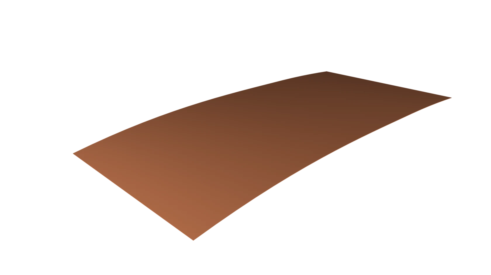
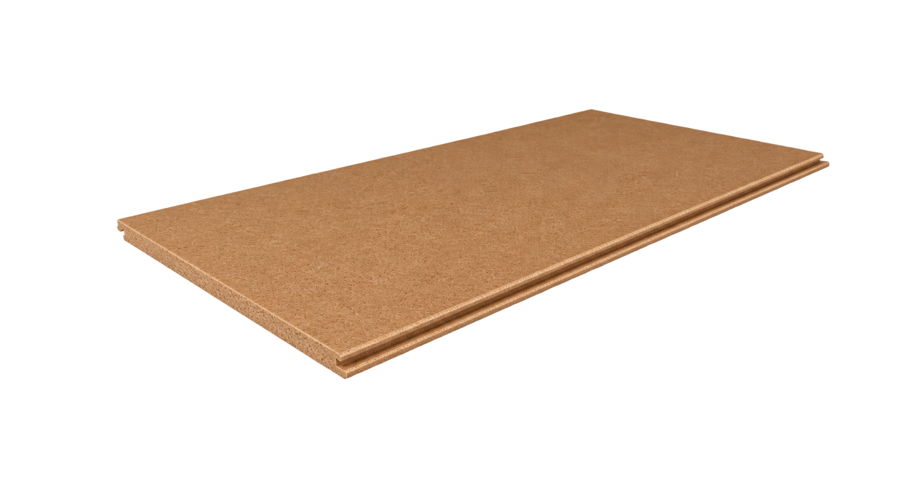
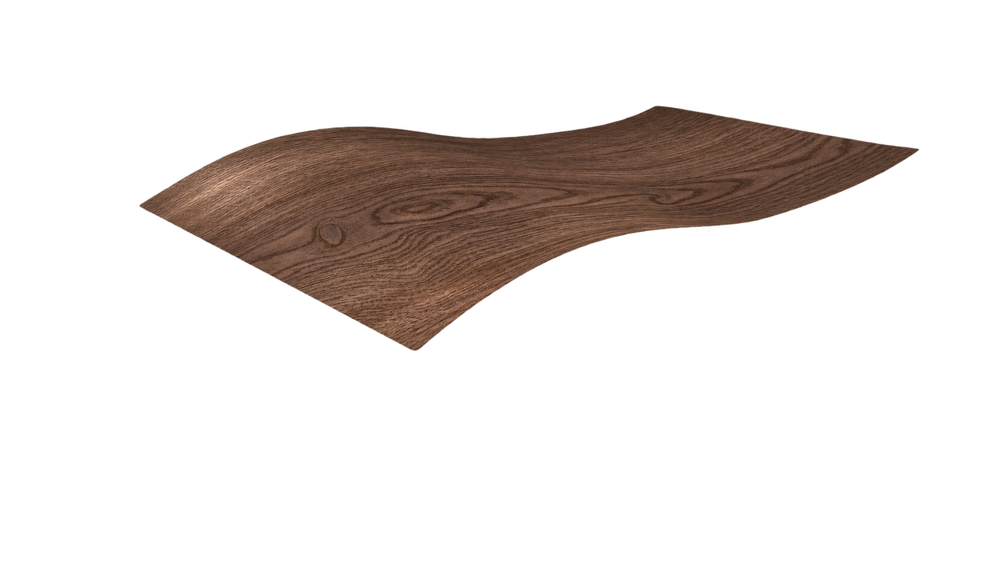
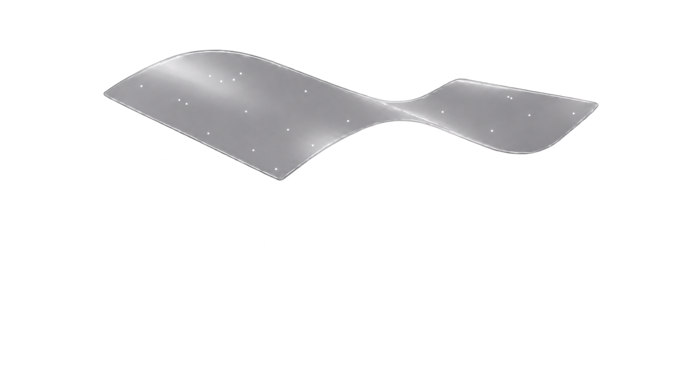

Как устроен EVERSENSE
Ламинированное покрытие на древесной основе: выразительный декор, защитная поверхность и продуманная конструкция для повседневной жизни. Разберёмся, что находится внутри панели и на что обратить внимание перед покупкой.
Древесная основа и декоративная поверхность
EVERSENSE относится к ламинированным напольным покрытиям. В основе панели находится древесная плита, над ней — декоративный рисунок и защитный слой. Такая конструкция позволяет соединить выбранный облик поверхности с характеристиками, важными для эксплуатации пола.
Древесные декоры передают рисунок и оттенки дуба с помощью декоративного слоя. Выберите близкий вам характер поверхности, затем оцените фактуру на образце и характеристики панели в карточке декора.
Четыре слоя — четыре задачи
Посмотрите, что скрывается под рисунком пола. У каждого слоя своя задача — и своё значение для вашего выбора.




Защитный слой
Оверлей находится над рисунком и принимает контакт с обувью, мебелью и уборкой. Стойкость поверхности не отменяет защиты от песка, острых предметов и перемещения тяжёлой мебели.
Что это значит для вас
Посмотрите на образец под углом: так легче заметить рельеф и характер блеска. Оцените поверхность рукой — фотография не передаёт это ощущение.
Как сохранить поверхностьДекоративный слой
Декоративный слой задаёт вид поверхности. Именно он передаёт рисунок древесины, мрамора и других декоров. В древесных декорах EVERSENSE рисунок создаёт декоративный слой.
Что это значит для вас
Разложите рядом несколько панелей. На большой площади важны не только цвет, но и чередование светлых и тёмных участков, выразительность рисунка.
Что проверить на образцеДревесная плита
Плита работает вместе с остальными слоями и соединениями. Результат после укладки зависит от всей системы пола: самой панели, основания, подложки и правильной сборки.
Что это значит для вас
Уточните у мастера, как он проверит ровность и влажность основания. Качественное покрытие не заменяет подготовку пола под ним.
Как подготовить основаниеСтабилизирующий слой
Нижний слой дополняет конструкцию и помогает сохранять форму панели. Все четыре слоя работают вместе; требования к монтажу относятся к покрытию целиком.
Что это значит для вас
Подложку подбирают отдельно по требованиям инструкции. Стабилизирующий слой внутри панели не заменяет предусмотренные материалы для монтажа.
Подложка и защита от влагиКак оценить фактуру и цвет
Фотография помогает выбрать направление, а образец — почувствовать поверхность. Посмотрите на него прямо и под углом: боковой свет делает рельеф заметнее. Приложите образец к стене, фасаду мебели и плинтусу, затем положите горизонтально — именно так пол будет восприниматься в комнате.
Оттенок на экране зависит от настроек дисплея, а в интерьере — от дневного и искусственного света. Окончательное решение лучше принимать по реальному материалу. Если важен спокойный общий фон, оценивайте не только цвет одной плашки, но и контраст рисунка на большей площади.
Что означают характеристики
Производитель заявляет для EVERSENSE 34 класс использования, влагостойкость до 72 часов контакта с водой и гарантию 30 лет. Класс использования помогает оценить назначение покрытия; он не означает, что поверхность невозможно поцарапать.
Для вашего проекта важны также толщина, формат панели, замок и площадь упаковки. Эти параметры помогают рассчитать покупку и спланировать монтаж; значения приведены в карточке выбранного артикула. Срок и условия гарантийного обслуживания смотрите в разделе «Гарантия».
Условия гарантии EVERSENSE Характеристики на сайте производителяВлага: устойчивость и разумный уход
Пролитую жидкость следует убирать сразу. Заявленная устойчивость к контакту с водой не превращает отделку пола в гидроизоляцию помещения и не означает защиту от протечки под покрытием. Важно учитывать стыки, примыкания, состояние основания и условия эксплуатации.
Для кухни заранее продумайте зоны возле мойки и посудомоечной машины. Для ванной комнаты сначала согласуйте допустимость выбранного покрытия и устройство примыканий с техническим специалистом. Помещения с постоянной сыростью и напольным сливом требуют отдельного решения.
Комфорт начинается с основания
Ощущение пола под ногами зависит не только от панели. Ровное сухое основание, подходящая подложка и правильная сборка помогают получить предсказуемый результат. Подложка не заменяет выравнивание, а её дополнительная толщина сама по себе не делает пол лучше.
При подогреве учитывают покрытие вместе с подложкой и режимом работы оборудования. Совместимость выбранной системы, ограничения температуры и порядок запуска проверяют до монтажа. Для плавающего пола также важны компенсационные зазоры и расположение встроенной мебели.
Повседневные привычки, которые сохраняют пол
У входа полезен коврик, собирающий песок, а на ножках мебели — чистые защитные накладки. Тяжёлые предметы лучше переносить, не протягивая по покрытию. Уборку начинают с удаления сухой пыли и мелких частиц, затем используют хорошо отжатую мягкую насадку.
Паровую уборку не применяют. Средства выбирают для ламинированных покрытий и используют по инструкции. Поверхность такого пола не предназначена для циклёвки: при повреждении способ восстановления зависит от глубины дефекта и состояния панели. Сохраните после ремонта несколько целых панелей того же артикула.
Что проверить перед заказом
Начните с помещения и сценария жизни: сколько людей проходит через него, есть ли подогрев и где возможен контакт с водой. Затем выберите декор, изучите его карточку и инструкцию. Уточните у продавца наличие нужного объёма, условия гарантии и комплект материалов для монтажа.
Так выбор становится понятным: вы знаете, как пол будет выглядеть, чего он требует при укладке и как за ним ухаживать. Подтверждённый образцом оттенок и заранее согласованные детали помогут избежать лишних решений в разгар ремонта.

Три коллекции.
Ваш характер дома.
Выберите настроение, затем оцените материал вживую. Разница видна в рисунке, оттенке и формате.
Посмотреть все декоры